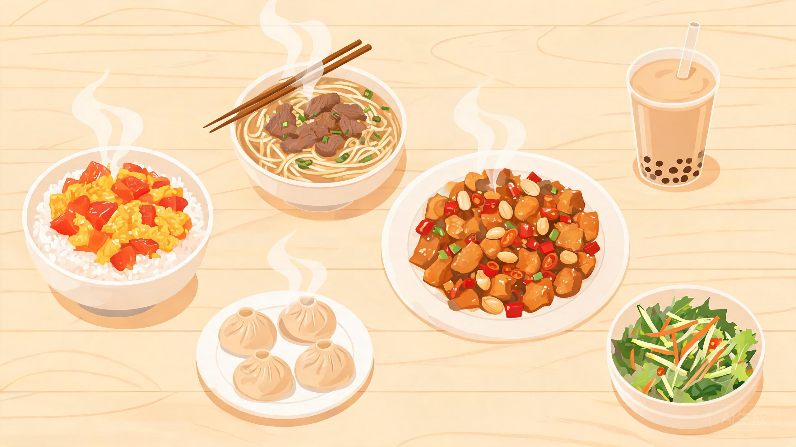

看看你今天适合吃什么
照片只在内存里压缩后上传，不保存、不展示给任何人。
拍一张，或从相册选
自然光、别开美颜，准确率更高这是基于可见表面状态的饮食建议，不是医疗诊断；标签可以自己取消或补充。

选择困难？让我来拍板
写下偏好，或直接点下面的按钮
说一句离谱的，罗盘替你转。
同一句话，今天抽到的菜是固定的 —— 这不是玄学，是 seed。
正在解签…
选几项就好，随时可以改；不想选也可以直接跳过。
三卡一次给三个不同档口，点“整组换一个”一起刷新。
照片只在内存里压缩后上传，不保存、不展示给任何人。
拍一张，或从相册选
自然光、别开美颜，准确率更高这是基于可见表面状态的饮食建议，不是医疗诊断；标签可以自己取消或补充。
填 Cloudflare Worker 地址，Key 保存在 Worker 里，前端拿不到。
留空则进入本地模式：营养拆解用规则估算，罗盘用本地签文。